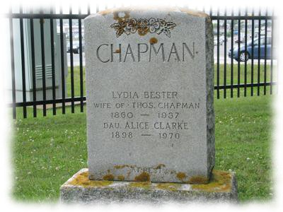

c1856 b. Shingay, Cambridge, England
Thomas doesn't appear with the family after the 1901 census. There are a lot of Thomas Chapman deaths from 1901-1910 in FreeBMD.
-->> in 1910, 49 years old

Daughter of Charles Bester (who was born in 1833 in England) and Sarah Gill (who was born in 1837 in Orwell, Cambridge, England) and who were married on 1856.11.30 in Orwell, Cambridge, England)
1860.12.05 Lydia was born in Little Eversden, Cambridge, England ( Dec 1860, Caxton, v.3b, pg.422 )
| 1861.04.07 Census | ||||||
| Residence: High St., Little Eversden, Cambridge, England | ||||||
| Last names | First names | Relation to Head | Condition | Age of | Occupation | Where Born |
| BESTER | CHAS | Head Fam | Mar | 27 | Labourer | Little Eversden Cambs |
| BESTER | SARAH | Wife | Mar | 23 | -- | Orwell Cambs |
| BESTER | CHAS | Son | Single | 4 | -- | Orwell Cambs |
| BESTER | WM | Son | Single | 3 | -- | Little Eversden Cambs |
| BESTER | ANNE | Daughter | Single | 1 | -- | Little Eversden Cambs |
| BESTER | LYDIA | Daughter | Single | 4 months | -- | Little Eversden Cambs |
| BESTER | MARY | Lodger | Widow | 60 | -- | Haslingfield Cambs |
1863.03.18 sister Elizabeth Bester is born in Little Eversden, Cambridge, England
1865.10.08 sister Caroline Bester is born in Little Eversden, Cambridge, England
1866 brother Harry Bester is born in Cambridge, England
1867.09.30 brother Harry Bester dies in Cambridge, England
1868.10.11 sister Minnie Bester is born in Cambridge, England
1870.02.28 sister Jessie Bester is born in Little Eversden, Cambridge, England
1871.04.02 census: living in Little Eversden, Cambridge, England
| 1871.04.02 Census, Civil Parish of Lt Eversden | ||||||
| Residence: Little Eversden, Cambridge, England | ||||||
| Last names | First names | Relation to Head | Condition | Age of | Occupation | Where Born |
| BESTER | CHARLES | Head | Mar | 37 | Labourer | Lt Eversden |
| BESTER | SARAH | Wife | Mar | 34 | -- | Orwell Cambs |
| BESTER | CHARLES | Son | -- | 14 | Labourer | Orwell Cambs |
| BESTER | WILLIAM | Son | -- | 13 | Labourer | Lt Eversden |
| BESTER | ANNE | Daur | -- | 11 | Scholar | Lt Eversden |
| BESTER | LYDIA | Daur | -- | 10 | Scholar | Lt Eversden |
| BESTER | ELIZth | Daur | -- | 8 | Scholar | Lt Eversden |
| BESTER | CAROLINE | Daur | -- | 6 | Scholar | Lt Eversden |
| BESTER | MINNIE | Daur | -- | 2 | -- | Lt Eversden |
| BESTER | JESSIE | Daur | -- | 6 mon | -- | Lt Eversden |
| BESTER | MARY | Mother | Wid | 69 | -- | Harlingsfield Cambs |
1872.05.07 sister Emma Bester is born in Little Eversden, Cambridge, England
1878.01.27 brother Charles Bester (21) marries Fanny Adams in Edmonton, Middlesex, England
1878.09.15 sister Anne Bester (19) marries Walter Perring in Tottenham, Middlesex, England
1881.04.03 census: living in Cambridge, Cambridgeshire, England, at 6 Round Church St
| 1881.04.03 Census, Civil Parish of the Holy Sepulchre, Town of Cambridge, Ecclesiastical Parish of the Holy Sepulchre | ||||||
| Residence: 6 Round Church St, Cambridge, Cambridgeshire | ||||||
| Last names | First names | Relation to Head | Condition as to Marriage | Age on Last Birthday | Occupation | Where Born |
| SEALES | ALBERT E | Head | Mar | 48 | Master Plumber | Cambridgeshire Chippenham |
| SEALES | MARY A | Wife | Mar | 47 | -- | Cambridgeshire Soham |
| SEALES | EMLIE C | Daur | Unm | 21 | -- | Cambridgeshire Cambridge |
| BESTER | LYDIA | Serv | Unm | 20 | General Servant | Cambridgeshire Little Eversden |
1885.01.17 (24) m. Royston, Hertford/Cambridge, England ( Mar 1885, Royston, v.3a, pg.389 )
| 1885. Marriage solemnized at the Register Office in the District of Royston in the Counties of Hertford/Cambridge | |||||||
| When Married | Name and Surname | Age | Condition | Profession | Residence | Father's Name | Profession of Father |
| Seventeenth January 1885 | Thomas Chapman | 28 years | Bachelor | Agricultural Labourer | Shingay | James Chapman (deceased) | Labourer |
| Lydia Bester | 24 years | Spinster | -- | Shingay | Charles Bester | Labourer | |
| Married in the Register Office by certificate before me, | James Smith, Deputy Registrar; ThoS Shell, Supt Registrar | ||||||
| This Marriage was solemnized between us | The mark X of Thomas Chapman | in the Presence of us | The mark X of David Chapman | ||||
| Lydia Bester | Loas Chapman | ||||||
c1856 b. Shingay, Cambridge, England
Thomas doesn't appear with the family after the 1901 census. There are a lot of Thomas Chapman deaths from 1901-1910 in FreeBMD.
1887.11.27 sister Caroline Bester (22) marries George William Newbury in Edmonton, Middlesex, England
1890.10 (30) son James Thomas Chapman is born in Edmonton, Middlesex, England
1891.04.03 census: Living in Edmonton, Middlesex, England, Bury St. at 3 Tau Yard
| 1891.04.05 Census, Civil Parish of Edmonton, Ecclesiastical Parish of All Saints, Parliamentary Divison of Enfield | ||||||
| Residence: Bury St., 3 Tau Yard, Edmonton, Middlesex (4 rooms) | ||||||
| Last names | First names | Relation to Head | Condition as to Marriage | Age on Last Birthday | Occupation | Where Born |
| CHAPMAN | THOMAS | Head | M | 34 | Farm Labourer | Cambs Shingay |
| CHAPMAN | LYDIA | Wife | M | 30 | -- | Cambs Eversden |
| CHAPMAN | THOMAS J | Son | -- | 5 mos | -- | Middx Edmonton |
1891 sister Emma Bester (19) marries William Chandler in Edmonton, Middlesex, England
1891.07.30 sister Minnie Alice Bester (23) marries William Green in Edmonton, Middlesex, England
1896 (36) son Philip Chapman is born
1898.08 (38) daughter Alice Chapman is born
1901.03.31 census: living in Edmonton, Middlesex, England at 3 Bury Street
| 1901 UK Census, Civil Parish of Edmonton, Ecclesiastical Parish of All Saints. Parliamentary Division of Enfield | ||||||
| Residence: 3 Bury Street, Edmonton, Middlesex | ||||||
| Last names | First names | Relation to Head | Condition as to Marriage | Age on Last Birthday | Occupation | Where Born |
| CHAPMAN | THOMAS | Head | M | 44 | Carman (U.D.G.) | Cambs Steeple Morden | CHAPMAN | LYDIA | Wife | M | 40 | -- | Cambs Little Eversden |
| CHAPMAN | JAMES | Son | -- | 10 | -- | Middlesex, Edmonton |
| CHAPMAN | PHILLIP | Son | -- | 5 | -- | Middlesex, Edmonton |
| CHAPMAN | ALICE | Daur | -- | 2 | -- | Middlesex, Edmonton |
| PERRIN | ANNY | Visitor | S | 13 | -- | Middlesex, Tottenham |
| MORGAN | JAMES | Boarder | S | 20 | Nurseryman Assistant | London, Millwall |
1903 father Charles Bester dies in Edmonton, Middlesex, England, age 69
1907.05.22 sister Anne (Bester) Perring (47) emigrates to Canada with her husband Walter Perring and children Emily (13), John, Rose (7)
1908.04.02 sister Caroline (Bester) Newbury (43) emigrates to Canada with her children William (14), Annie (12), Thomas (7)
1910.06.04 (49) Lydia emigrates to Canada
| 1910.06.04 Sailed from Liverpool, England on the Dominion Line's S.S. Canada (destination Quebec & Montreal) | ||||||||
| 1910.06.12 Arrived in Quebec at 5:45 am. | ||||||||
| Amt of Cash | Name of Passenger | Age | Able to Read | Able to Write | Married or Single | Occupation | Country of Birth | Destination |
| $25.00 | Chapman, Lydia | 48 | Y | Y | W | Horsekeeper ? | English | To Sister Orillia |
| -- | Chapman, James | 19 | Y | Y | S | Farmer | English | Orillia |
| -- | Chapman, Alice | 11 | Y | Y | -- | -- | English | Orillia |
| Above from Library and Archives Canada, Reference: RG 76, Microfilm: T-4767: ship's passenger list (they are on page 23) | ||||||||
|
Number of Souls: Adults: 955, Children: 246 Saloon: 0, 2nd Cabin: 390, Steerage: 808. C.P.R. passengers left by special train at 11 am. Detained by Civil Examiners: 30 Three families, totalling eleven people were detained at Grosse Isle. |
||||||||
1911.06.01 census: living in Orillia, Ontario, Canada on Victoria Street
| 1911 CAN Census, District: Simcoe East 119, Sub-District: Orillia 39 | |||||||||||||||||||||||||||||||||||||||||||||||||||||||||||||||||||||||||||||||||||||||||||||||||||||||||||||||||||||||||||||||||||||||||||||||||||||||||||||||||||||||||||||||||||||||||||||||||||||||||||||||||||||||||||||||||||||||||||||||||||||||||||||||||||||||||||||||||||||||||||||||||||||||||||||||||||||||||||||||||||||||||||||||||||||||||||||||||||||||||||||||||||||||||||||||||||||||||||||||||||||||||||||||||||||||||||||||||||||||||||||||||||||||||||||||||||||||||||||||||||||||||||||||||||||||||||||||||||||||||||||||||||||||||||||||||||||||||||||||||||||||||||||||||||||||||||||||||||||||
| Residence: Victoria Street, Orillia Ontario | |||||||||||||||||||||||||||||||||||||||||||||||||||||||||||||||||||||||||||||||||||||||||||||||||||||||||||||||||||||||||||||||||||||||||||||||||||||||||||||||||||||||||||||||||||||||||||||||||||||||||||||||||||||||||||||||||||||||||||||||||||||||||||||||||||||||||||||||||||||||||||||||||||||||||||||||||||||||||||||||||||||||||||||||||||||||||||||||||||||||||||||||||||||||||||||||||||||||||||||||||||||||||||||||||||||||||||||||||||||||||||||||||||||||||||||||||||||||||||||||||||||||||||||||||||||||||||||||||||||||||||||||||||||||||||||||||||||||||||||||||||||||||||||||||||||||||||||||||||||||
| Name of each person | Relation to Head | Single, Married ... | Month of birth | Year of birth | Age on last birthday | Place of birth | Year of naturalization | Racial origin | Religion | Occupation | Where Employed | ||||||||||||||||||||||||||||||||||||||||||||||||||||||||||||||||||||||||||||||||||||||||||||||||||||||||||||||||||||||||||||||||||||||||||||||||||||||||||||||||||||||||||||||||||||||||||||||||||||||||||||||||||||||||||||||||||||||||||||||||||||||||||||||||||||||||||||||||||||||||||||||||||||||||||||||||||||||||||||||||||||||||||||||||||||||||||||||||||||||||||||||||||||||||||||||||||||||||||||||||||||||||||||||||||||||||||||||||||||||||||||||||||||||||||||||||||||||||||||||||||||||||||||||||||||||||||||||||||||||||||||||||||||||||||||||||||||||||||||||||||||||||||||||||||||||||||||
| CHAPMAN, SYDIA | Head | W | Dec | 1860 | 50 | England | 1910 | English | Anglican | Washerwoman | at home | ||||||||||||||||||||||||||||||||||||||||||||||||||||||||||||||||||||||||||||||||||||||||||||||||||||||||||||||||||||||||||||||||||||||||||||||||||||||||||||||||||||||||||||||||||||||||||||||||||||||||||||||||||||||||||||||||||||||||||||||||||||||||||||||||||||||||||||||||||||||||||||||||||||||||||||||||||||||||||||||||||||||||||||||||||||||||||||||||||||||||||||||||||||||||||||||||||||||||||||||||||||||||||||||||||||||||||||||||||||||||||||||||||||||||||||||||||||||||||||||||||||||||||||||||||||||||||||||||||||||||||||||||||||||||||||||||||||||||||||||||||||||||||||||||||||||||||||
| CHAPMAN, JAMES | Son | S | Oct | 1890 | 20 | England | 1910 | English | Anglican | Labourer | odd jobs | ||||||||||||||||||||||||||||||||||||||||||||||||||||||||||||||||||||||||||||||||||||||||||||||||||||||||||||||||||||||||||||||||||||||||||||||||||||||||||||||||||||||||||||||||||||||||||||||||||||||||||||||||||||||||||||||||||||||||||||||||||||||||||||||||||||||||||||||||||||||||||||||||||||||||||||||||||||||||||||||||||||||||||||||||||||||||||||||||||||||||||||||||||||||||||||||||||||||||||||||||||||||||||||||||||||||||||||||||||||||||||||||||||||||||||||||||||||||||||||||||||||||||||||||||||||||||||||||||||||||||||||||||||||||||||||||||||||||||||||||||||||||||||||||||||||||||||||
| CHAPMAN, ALICE | Daughter | S | August | 1898 | 12 | England | 1910 | English | Anglican | Domestic | --?? Family | ||||||||||||||||||||||||||||||||||||||||||||||||||||||||||||||||||||||||||||||||||||||||||||||||||||||||||||||||||||||||||||||||||||||||||||||||||||||||||||||||||||||||||||||||||||||||||||||||||||||||||||||||||||||||||||||||||||||||||||||||||||||||||||||||||||||||||||||||||||||||||||||||||||||||||||||||||||||||||||||||||||||||||||||||||||||||||||||||||||||||||||||||||||||||||||||||||||||||||||||||||||||||||||||||||||||||||||||||||||||||||||||||||||||||||||||||||||||||||||||||||||||||||||||||||||||||||||||||||||||||||||||||||||||||||||||||||||||||||||||||||||||||||||||||||||||||||||
| From Library and Archives Canada. Ontario | |||||||||||||||||||||||||||||||||||||||||||||||||||||||||||||||||||||||||||||||||||||||||||||||||||||||||||||||||||||||||||||||||||||||||||||||||||||||||||||||||||||||||||||||||||||||||||||||||||||||||||||||||||||||||||||||||||||||||||||||||||||||||||||||||||||||||||||||||||||||||||||||||||||||||||||||||||||||||||||||||||||||||||||||||||||||||||||||||||||||||||||||||||||||||||||||||||||||||||||||||||||||||||||||||||||||||||||||||||||||||||||||||||||||||||||||||||||||||||||||||||||||||||||||||||||||||||||||||||||||||||||||||||||||||||||||||||||||||||||||||||||||||||||||||||||||||||||||||||||||
|
Reference: RG31, Statistics Canada, Microfilm Reel Number: T-20396
[census pg.07],
[census pg.08].
1911.12.23 son James Thomas Chapman (21) marries Edith Meredith in Orillia, Ontario, Canada 1912.11.11 sister Caroline (Bester) Newbury (47) marries Coleman Armstrong in Orillia, Ontario, Canada  Lydia Bester, St. Andrews St. James' Cemetery1937.04.14 Lydia dies at age 76 in Orillia, Ontario, 317 Millard Street 1937.04.17 Lydia is buried in Orillia, Ontario, Canada, St. Andrew's St. James' Cemetery, Section F
|
|||||||||||||||||||||||||||||||||||||||||||||||||||||||||||||||||||||||||||||||||||||||||||||||||||||||||||||||||||||||||||||||||||||||||||||||||||||||||||||||||||||||||||||||||||||||||||||||||||||||||||||||||||||||||||||||||||||||||||||||||||||||||||||||||||||||||||||||||||||||||||||||||||||||||||||||||||||||||||||||||||||||||||||||||||||||||||||||||||||||||||||||||||||||||||||||||||||||||||||||||||||||||||||||||||||||||||||||||||||||||||||||||||||||||||||||||||||||||||||||||||||||||||||||||||||||||||||||||||||||||||||||||||||||||||||||||||||||||||||||||||||||||||||||||||||||||||||||||||||||